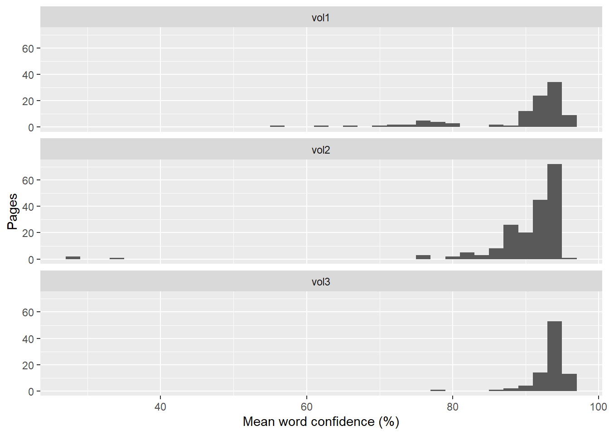

Show code
pages |>
count(volume, tier) |>
pivot_wider(names_from = tier, values_from = n, values_fill = 0) |>
kable()| volume | A_manual | B_proofread | C_spot_check |
|---|---|---|---|
| vol1 | 20 | 15 | 67 |
| vol2 | 14 | 48 | 126 |
| vol3 | 2 | 6 | 80 |
Not every page needs the same attention. After OCR, each page is scored and placed in one of three tiers, so effort goes where it is needed.
Tesseract reports a confidence for every word. A word is flagged for review if either of these holds:
spelling package’s English dictionary.Names and places are not in the dictionary, so they are flagged too. That adds noise but is harmless: a flag only asks a person to look. The opposite error is not caught. A real word that OCR misreads as a different real word, with high confidence, is not flagged.
A page’s tier depends on the share of its words that are flagged.
| Tier | Rule | Treatment |
|---|---|---|
| A, manual | 25% or more of words flagged, fewer than 40 words, or forced | Type from the scan |
| B, proofread | 10% to 25% flagged | Fix flagged words |
| C, spot check | Under 10% flagged | Spot check only |
“Forced” pages are listed in the force_manual_pages column of data/volume_config.csv: the 1966 front matter (pages 1 to 6) and the two-column newsletter pages in vol3 (87 and 88), where tesseract’s output is known to be unreliable regardless of its confidence.
pages |>
count(volume, tier) |>
pivot_wider(names_from = tier, values_from = n, values_fill = 0) |>
kable()| volume | A_manual | B_proofread | C_spot_check |
|---|---|---|---|
| vol1 | 20 | 15 | 67 |
| vol2 | 14 | 48 | 126 |
| vol3 | 2 | 6 | 80 |
ggplot(pages, aes(mean_conf)) +
geom_histogram(binwidth = 2) +
facet_wrap(vars(volume), ncol = 1) +
labs(x = "Mean word confidence (%)", y = "Pages")
The median page scores 92% to 94% mean confidence, with 5% to 8% of words flagged. Most tier A pages in vol1 fall in pages 10 to 27, a section typed with a worn ribbon whose letters are broken but still legible to a person.
The cutoffs above have not been tuned. Tuning needs hand-typed reference pages, which do not exist yet (see Local OCR). Treat the tiers as a sensible first sort, not a measured quality grade. A file of manual overrides, data/triage_overrides.csv, is planned so a person can move a page between tiers; it has not been created.
The tiering, draft text and review images are produced by one script. It reads the cached OCR results, marks flagged words as [?word] in the draft text, and draws red boxes on the page images of tiers A and B for the proofreading app.
# Aggregate cached OCR into triage tiers, draft text, review images and the
# manual queue. Reads data/interim/ocr/*.rds (see R/ocr_pipeline.R) and the
# per-volume settings in data/volume_config.csv. Returns every file it writes.
library(tidyverse)
library(magick)
source("R/utils.R")
low_conf_cut <- 60 # tesseract word confidence below this is flagged
# Pages the config forces into tier A (front matter, two-column layouts)
forced_pages <- function(config) {
config |>
filter(!is.na(force_manual_pages)) |>
mutate(page = map(force_manual_pages, parse_pages)) |>
unnest(page) |>
transmute(page_id = sprintf("%s_p%03d", volume_id, page)) |>
pull(page_id)
}
# Rebuild lines from word boxes so flagged words can be marked inline
mark_text <- function(w) {
w <- w |> mutate(ymid = (y0 + y1) / 2, h = y1 - y0)
lh <- median(w$h)
w |>
arrange(ymid, x0) |>
mutate(line = cumsum(c(TRUE, diff(ymid) > 0.6 * lh))) |>
arrange(line, x0) |>
mutate(out = if_else(flagged, paste0("[?", word, "]"), word)) |>
summarise(.by = line, txt = paste(out, collapse = " ")) |>
pull(txt) |> paste(collapse = "\n")
}
build_outputs <- function(config, ocr_files = list.files("data/interim/ocr", full.names = TRUE)) {
forced_manual <- forced_pages(config)
res <- map(ocr_files, readRDS) |> set_names(tools::file_path_sans_ext(basename(ocr_files)))
words <- map_dfr(res, "words") |>
mutate(token = str_replace_all(word, "^[^A-Za-z']+|[^A-Za-z']+$", ""),
is_word = nchar(token) >= 2)
bad <- spelling::spell_check_text(paste(unique(words$token[words$is_word]), collapse = "\n"))$word
words <- words |>
mutate(low_conf = confidence < low_conf_cut,
misspelled = is_word & token %in% bad,
flagged = low_conf | misspelled)
pages <- words |>
summarise(.by = page_id, n_words = n(), mean_conf = mean(confidence),
pct_low = mean(low_conf), pct_flag = mean(flagged)) |>
mutate(volume = str_sub(page_id, 1, 4), page = as.integer(str_sub(page_id, 7)),
tier = case_when(page_id %in% forced_manual ~ "A_manual",
pct_flag >= 0.25 | n_words < 40 ~ "A_manual",
pct_flag >= 0.10 ~ "B_proofread",
TRUE ~ "C_spot_check"),
reason = case_when(page_id %in% forced_manual ~ "front matter or two-column layout",
n_words < 40 ~ "very few words (short or failed page)",
pct_flag >= 0.25 ~ "high share of low-confidence or non-dictionary words",
pct_flag >= 0.10 ~ "moderate share of flagged words")) |>
arrange(volume, page)
drafts <- words |> group_split(page_id) |>
set_names(map_chr(group_split(words, page_id), \(d) d$page_id[1])) |>
map_chr(mark_text)
pages <- pages |>
mutate(text = map_chr(page_id, \(id) str_trim(res[[id]]$text)),
text_marked = drafts[page_id])
dir.create("output", showWarnings = FALSE)
write_csv(select(pages, page_id, volume, page, tier, reason, n_words, mean_conf, pct_low, pct_flag, text, text_marked),
"output/pages.csv")
write_csv(select(words, page_id, word, confidence, x0, y0, x1, y1, low_conf, misspelled, flagged),
"output/ocr_words.csv")
# Draft text per volume: tier A pages carry a banner, flagged words are [?word]
draft_files <- map_chr(unique(pages$volume), \(v) {
pg <- filter(pages, volume == v)
txt <- pmap_chr(pg, \(page, tier, text_marked, ...) {
banner <- if (tier == "A_manual") "\n*** MANUAL TRANSCRIPTION NEEDED: OCR unreliable ***" else ""
sprintf("[p. %d]%s\n%s\n", page, banner, text_marked)
})
path <- file.path("output", paste0(v, "_draft.txt"))
writeLines(txt, path)
path
})
# Review images: red boxes on flagged words, for tier A and B pages
dir.create("data/pages/review", showWarnings = FALSE, recursive = TRUE)
review_files <- pages |> filter(tier != "C_spot_check") |> pull(page_id) |> map_chr(\(id) {
w <- filter(words, page_id == id, flagged)
img <- image_read(file.path("data/pages", paste0(id, ".png")))
img <- image_draw(img)
rect(w$x0 - 2, w$y0 - 2, w$x1 + 2, w$y1 + 2, border = "red", lwd = 2)
dev.off()
path <- file.path("data/pages/review", paste0(id, ".png"))
image_write(image_resize(img, "50%"), path, format = "png")
path
})
# Manual queue: pages ranked by how much work they need
queue <- pages |>
filter(tier != "C_spot_check") |>
mutate(n_flagged = round(pct_flag * n_words)) |>
arrange(tier, desc(pct_flag)) |>
select(page_id, tier, reason, n_words, n_flagged, pct_flag, mean_conf)
write_csv(queue, "output/manual_queue.csv")
c("output/pages.csv", "output/ocr_words.csv", "output/manual_queue.csv", draft_files, review_files)
}